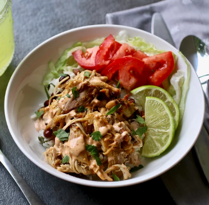

Chicken Carnitas

Description
Ingredients
- 1 tablespoon ground cumin
- ½ teaspoon chili powder
- ½ teaspoon dried oregano
- 1 pinch salt and ground black pepper to taste
- 3 tablespoons olive oil, divided
- 2 pounds skinless, boneless chicken breast halves
- 5 cloves garlic, pressed
- 1 yellow onion, quartered
- ¼ cup lime juice
- ¼ cup chicken broth
- ½ bunch cilantro
- 1 chipotle pepper in adobo sauce, or more to taste
- 1 orange, zested and juiced
- 1 bay leaf
Steps
- Combine cumin, chili powder, oregano, salt, and pepper in a bowl. Sprinkle over chicken breasts on both sides.
- Turn on a multi-functional pressure cooker (such as Instant Pot®) and select Saute function. Add 1 tablespoon olive oil and sear chicken breasts, 1 to 2 minutes per side, working in batches so chicken sears rather than steams. Transfer chicken to a plate.
- Add garlic and onion to the hot cooker; cook and stir until browned evenly on all sides, about 2 minutes. Return chicken to the pressure cooker along with lime juice, chicken broth, cilantro, chipotle pepper with 1 tablespoon adobo sauce, orange zest and juice, and bay leaf. Close and lock the lid. Set timer for 8 to 10 minutes, depending on size of chicken breasts.
- Meanwhile, combine mayonnaise, milk, chipotle pepper and 1 tablespoon adobo sauce, salt, and garlic powder to an electric blender. Blend chipotle sauce until smooth.
- Release pressure from the cooker using the natural-release method according to manufacturer's instructions, 10 to 40 minutes. Unlock and remove the lid.
- Set an oven rack about 6 inches from the heat source and preheat the oven's broiler.
- Transfer chicken breasts to a clean surface and reserve cooking liquid. Shred chicken meat using 2 forks. Place in a large bowl and drizzle 1/4 cup cooking liquid over chicken; toss to coat. Drizzle 1 tablespoon oil over the surface of a baking sheet. Add chicken to the sheet and drizzle remaining 1 tablespoon oil on top. Stir to coat evenly.
- Broil chicken in the preheated oven for 5 minutes. Toss chicken with 1 to 2 tablespoons reserved cooking liquid and rotate the pan for even broiling. Continue broiling until crispy, 5 to 7 minutes more. Serve with chipotle sauce.
You can use chicken thighs instead of breasts, if you'd like.